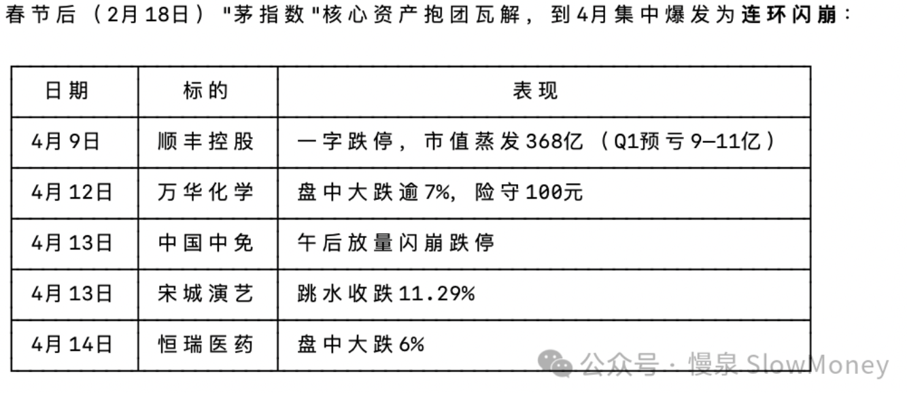
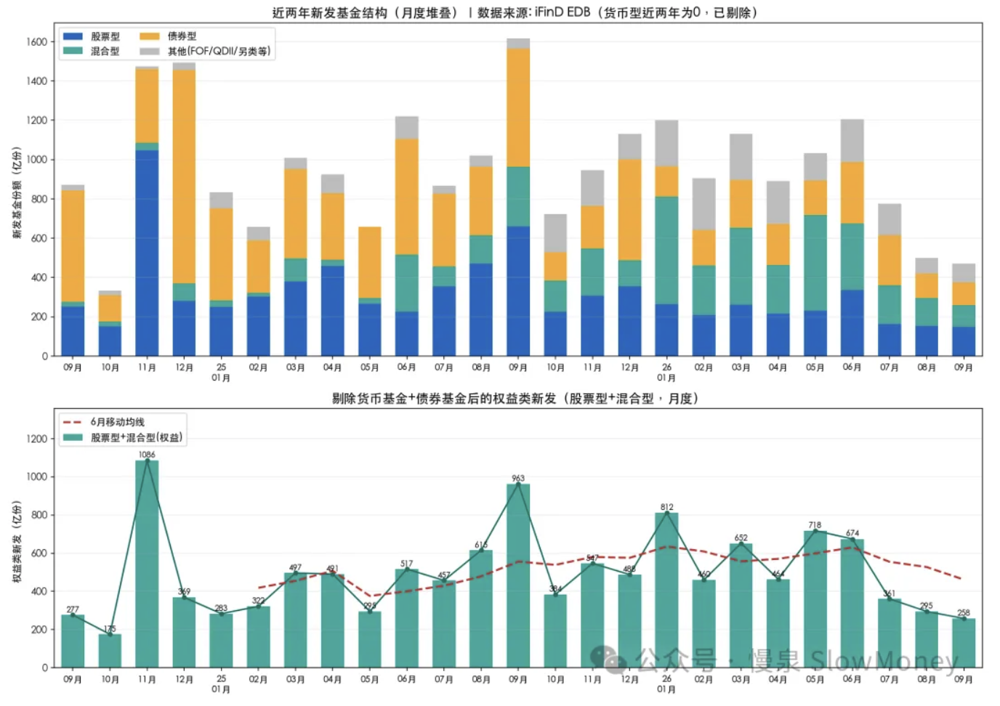
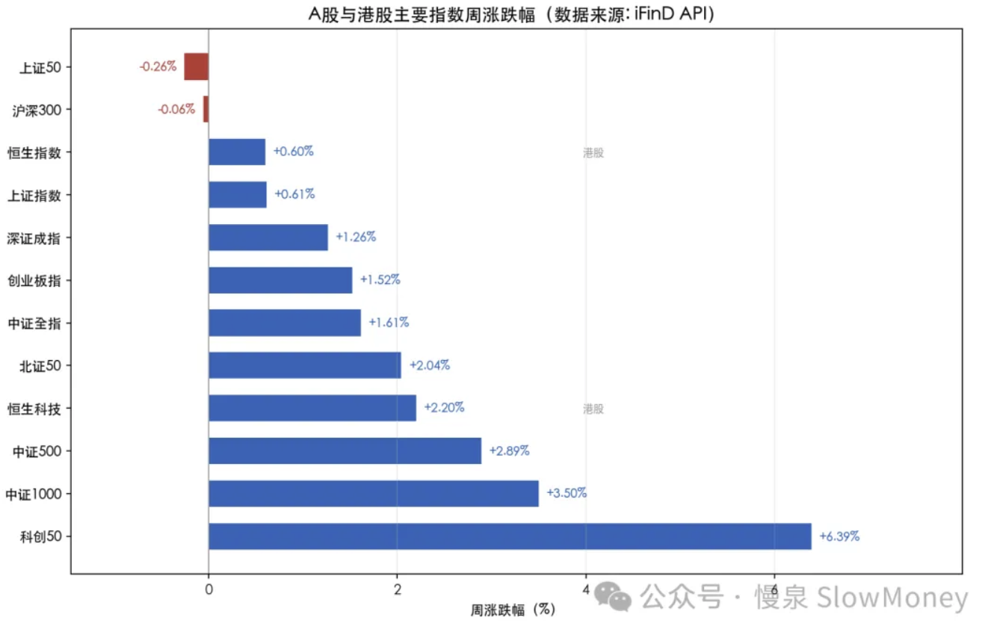
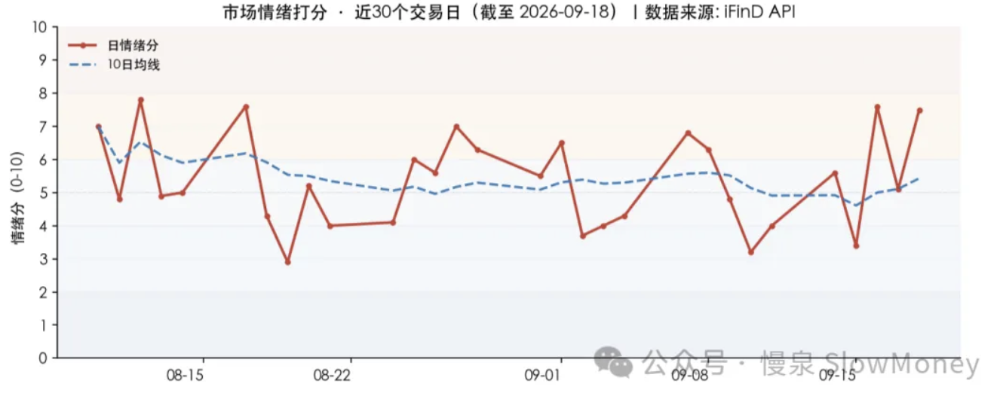

投资备忘20260919-白马祭天
2026-09-14 — 2026-09-19 · W38 · 周度备忘（补档）
这周市场的主题词是"回"——可能是快到中秋节了，大家思乡情绪浓烈了，市场和板块也尝试中枢的"回"归。表现强势的科技经过两个月的下跌震荡后开始反弹，可能也是到了季度末，该做的动作还是得做；一些低位的资产也看到反弹，包括地产、宝信、安井等破位资产。表现较差的主要是前期涨幅较大的农产品、资源品、AI 应用和非银金融，包括一些白马股不断被拿来"祭天"——上周是恒瑞，这周是宁德、万华、恒立和工程机械。白马祭天在之前市场出现过几次，这次怎么了？
白马祭天
一天杀一只白马股主要是指 2021 年 4 月，之后的 2022 年 1-2 月、2022 年 9 月也曾出现过。其中 2021 年最让人印象深刻；2022 年春节前后也出现长春高新、药明康德和宁德时代的连续下跌；2022 年 9 月从药明康德、宁德时代、阳光、东财等，8 天连续杀 9 白马。

原因：流动性、估值大于业绩。闪崩大部分有某种意义上的催化，其中最可能出现的是业绩，但是出现连续的白马祭天，大概率是整体估值被推升或者流动性难以为继，叠加筹码集中，可能引起基金重仓"白马"的轮流下跌。最明显的是 2021 年 1 月新发基金火爆，三月锁定后赎回，形成"赎回-抛售-抱团瓦解"的负反馈。
后续可能"确认调整结束"也可能"下跌中继"。2021 年是调整尾声的走法，继续经过一个月的磨底之后反弹，变成宽幅震荡的市场、结构市；2022 年是不同程度的继续下跌，汇率和资本市场双重冲击。
当前：发行已经变冷，防止外汇联动。

本周市场：低开高走、极致分化
全周"低开高走、震荡上行"，呈现典型的结构性进攻——美联储鹰派加息压制权重与周期，但 AI 硬件/半导体/存储的"订单兑现"逻辑持续强化，资金向高景气成长"缩圈抱团"。周三放量普涨、周五成交突破 2 万亿（为近期地量后的显著放量），赚钱效应与量能同步修复。
结构极致分化是最大特征：全 A 中位数仅 +0.85%，但电子 +6.06%、科创 50 +6.39%，说明市场并非普涨，而是"少数高景气方向"的极致抱团——等权因子（-2.02%）大幅跑输市值加权印证了这一点。教科书级的"成长 > 价值、小盘 > 大盘"进攻格局：高市盈率（成长）+3.78% vs 低市盈率（价值）-1.19%，中证 1000 +3.50% vs 上证 50 -0.26%。更值得注意的是质量因子和等权因子全线大幅跑输（800 质量 -2.87%、300 质量低波 -2.27%、800 等权 -2.02%），说明资金在"高景气方向"上做极致抱团，而非普涨。
AI 硬件"订单兑现"成唯一主线：半导体（+8.23%）、存储（+7.68%）、光模块（+5.62%）、算力（+4.31%）全线爆发，核心驱动从"CapEx 担忧"切换为"回报验证与订单兑现"——高盛上修 800G 光模块需求 39%/36%、存储涨价 30-40%、联想 AI 服务器订单 3600 亿、华为昇腾超节点发布。这是本周超额收益的核心来源。
地产链与医药成第二梯队：房地产（+3.26%）、建材（+2.32%）受益于"现房时代/新预售制"政策预期；医药生物（+3.26%）、创新药（+2.72%）受益于出海高景气与创新药 4.0 时代。二者是资金从周期红利向"政策底 + 产业底"切换的承接方向。
周期红利全面失血：石油石化（-3.72%）、煤炭（-2.72%）、银行（-1.82%）、公用事业（-1.01%）领跌——本质是美联储鹰派加息 + 美债 5%+ 美元走强压制高股息资产的估值锚，叠加前期红利抱团的获利回吐。

市场展望
模式识别：中期仍然看震荡为基准情景，而且震荡区间可能扩展成 3800-4000 的宽幅震荡，时间会比较长，类似 2021 年 2 月份之后的情况。短期之前在 3920-4000 的区间，现在下探到 3850 后开始尝试回到之前的区间。短期可能出现两种情况：一种是修复好，回到宽幅震荡的格局或者回到 3900-4000 的震荡格局；另一种是修复失败，相当于冲击失败、向下测试——第一目标是 3850 的防守位置。
市场情绪：本周市场情绪震荡回升。情绪分 7.5（偏暖/乐观）为本轮反弹以来高点，风险偏好分 9.2（跌幅 ≥5% 仅 6 家、零跌停）显示亏钱效应几乎消失。但"近两周/近一月"仍在中性区间（5.2/5.5），说明情绪回暖是"近一两个交易日的边际变化"，尚未形成持续性的强势周期。

宏观观察：资金的募集和汇率可能变化。公募基金的发行已经从 5、6 月份砍掉 60%，如果后续出现赎回，场内的流动性冲击会继续冲击高位股和白马；另外人民币汇率在 7 附近的窗口——观察过去的白马祭天的时间点基本都有汇率的因素，在最不关注的地方需要警惕。
观察过去的白马祭天的时间点基本都有汇率的因素——在最不关注的地方需要警惕。
组合备忘
Beta 组合表现明显跑输市场（市场是指中证全 A），Macro 同样下跌。本周市场上涨但是组合跑输。组合仓位继续下降：Beta 策略仓位 85%，主要内部微调、变动不大；Macro 策略仓位 77%（其中转债 30%）。组合与市场的负超额主要是超配周期化工资源类资产，而且低配领涨的科技 AI 硬件——组合在"成长进攻、周期失血"的极致分化行情中，站在了错误的一侧：超配了被资金抛弃的周期/红利，低配了被资金抱团的 AI 硬件。
| 类别 | 仓位 |
|---|---|
| Beta 策略（内部微调为主，仓位继续下降） | 85% |
| Macro 策略权益仓位（含转债 30%） | 77% |
Beta 明显跑输市场 · Macro 同样下跌 · 周度涨幅不再公开播报
操作和思考：本周主要是调结构，整体仓位略微下降。结构上从红利资产继续向 HALO 资产转移：一方面判断当前是宏观交易的窗口，海外剧烈波动的情况下资源品有形成内外共振的板块，联储和地缘都在威胁美元地位，进而影响资产定价；另一方面 A 股市场迫切需要寻找科技硬件之后的替代资产，在创新药、低位资产和软件相继回落之后，接棒并且能够形成共振的大概率是资源品。
下一步：要充分预估困难——基金募资下降和汇率可能共振的风险，特别是在节前成交量较低的情况下很容易出现长下影或者长上影线，甚至中阴线的可能性。组合仓位需要继续控制，短期内的核心持仓保持 HALO 资产、低位资产和 AI 端侧应用资产。仓位上继续下降，组合结构上选择在节前稳定，少动多看。
- HALO 资产：宏观交易窗口的主攻方向，但要预估资源品失血的延续风险；
- 低位资产：政策底 + 产业底的承接方向（地产链、医药第二梯队）；
- AI 端侧应用资产：科技硬件之后的应用扩散。
上期钩子的答案：① 调整拉长与中枢下沿——部分验证：下探 3850 后修复，基准情景更新为 3800-4000 宽幅长震荡（类似 2021/2 之后），3850 防守位成为短期第一测试目标；② AI 独苗主线持续性——强于预期：订单兑现逻辑强化，科创 50 +6.39%、半导体 +8.23%，周五放量破 2 万亿，节前缩量风险暂未兑现；③ 美元定价资产基准重构——反向冲击：美联储鹰派加息 + 美元走强压制高股息与资源品估值锚，石油石化 -3.72%、煤炭 -2.72% 领跌，"宏观交易窗口"判断受挫；④ 资源品接棒——未兑现：周期红利全面失血，组合连续站在错误一侧。新钩子：① 本轮白马祭天的性质——"确认调整结束"（2021 式磨底后结构市）还是"下跌中继"（2022 式汇率+资本市场双杀）；② 新发基金砍 60% + 人民币汇率 7 附近的窗口——赎回负反馈是否触发；③ 3800-4000 宽幅震荡与 3850 防守位的测试结果；④ 资金从"高景气缩圈抱团"向地产链/医药第二梯队扩散的持续性。对账窗口：2026 年 10 月中旬。